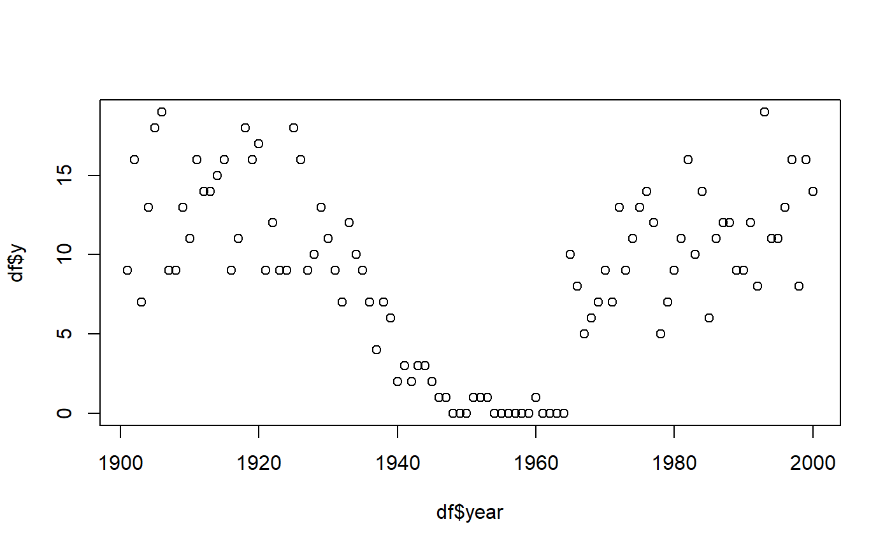
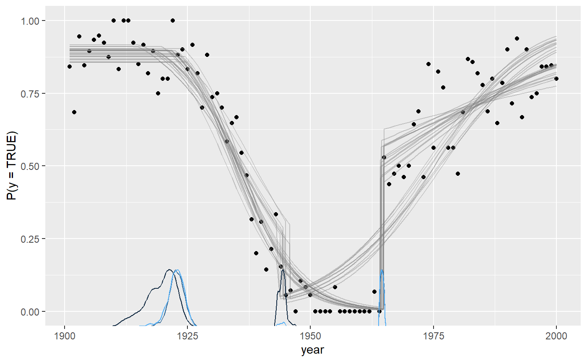

Binomial change point analysis with mcp
Jonas Kristoffer Lindeløv
2019-10-31
binomial.Rmdmcp aims to implement Generalized Linear Models in a way that closely mimicks that of brms::brm. You can set the family and link functions using the family argument.
First, let us specify a toy model with three segments:
segments = list(
y | trials(N) ~ 1, # constant rate
1 ~ 0 + year, # joined changing rate
1 ~ 1 + year # disjoined changing rate
)Simulate data
If you already have data, you can safely skip this section.
We run mcp with sample = FALSE to get what we need to simulate data.
Now we can simulate. First, let us see the model parameters.
## $population
## [1] "int_1" "int_3" "year_2" "year_3" "cp_1" "cp_2"
##
## $varying
## NULL
##
## $x
## [1] "year"
##
## $y
## [1] "y"
##
## $trials
## [1] "N"- It takes two intercepts (
int_*), for segments 1 and 3. - It takes two slopes (
year_*), for segment 2 and 3. - It takes two change points (
cp_*) - one between each segment.
empty$func_y is now a function that can predict data given these parameters. If you are in a reasonable R editor, type empty$func_y( and press TAB to see the required arguments. I came up with some values below, including change points at \(year = 25\) and \(year = 65\). Notice that because binomial() defaults to the link function link = "logit", the intercept and slopes are on a logit scale. Briefly, this extends the narrow range of binomial rates (0-1) to an infinite logit scale from minus infinity to plus infinity. This will be important later when we set priors.
library(tibble)
data = tibble(
year = 1901:2000, # evaluate for each of these
N = sample(10:20, size = 100, replace = TRUE), # number of trials
y = empty$func_y(year, N, 2, 0, -0.2, 0.05, 1925, 1965)
)
data## # A tibble: 100 x 3
## year N y
## <int> <int> <int>
## 1 1901 13 12
## 2 1902 17 16
## 3 1903 13 12
## 4 1904 10 9
## 5 1905 11 11
## 6 1906 13 11
## 7 1907 17 15
## 8 1908 20 17
## 9 1909 14 12
## 10 1910 18 18
## # ... with 90 more rowsVisually:

Check parameter recovery
The next sections go into more detail, but let us quickly see if we can recover the parameters used to simulate the data.
## Compiling data graph
## Resolving undeclared variables
## Allocating nodes
## Initializing
## Reading data back into data table
## Compiling model graph
## Resolving undeclared variables
## Allocating nodes
## Graph information:
## Observed stochastic nodes: 100
## Unobserved stochastic nodes: 6
## Total graph size: 2028
##
## Initializing model
##
## user system elapsed
## 18.89 0.16 19.14We can use summary to see that it recovered the parameters to a pretty good precision. Again, recall that intercepts and slopes are on a logit scale.
## Family: binomial(link = 'logit')
## Iterations: 9000 from 3 chains.
## Model:
## y | trials(N) ~ 1
## 1 ~ 0 + year
## 1 ~ 1 + year
##
## Population-level parameters:
## name mean X2.5 X97.5 rhat eff ts_se
## cp_1 1921.8747 1917.2123 1925.9206 1.03 308 1.70e+02
## cp_2 1964.4970 1964.0085 1964.9519 1.00 5166 1.45e-01
## int_1 2.0480 1.6538 2.4685 1.02 380 8.76e-01
## int_3 0.1635 -0.1785 0.4864 1.01 986 2.58e-01
## year_2 -0.1606 -0.1881 -0.1345 1.01 542 2.90e-03
## year_3 0.0444 0.0272 0.0623 1.00 946 7.51e-04summary uses 95% highest density intervals (HDI) by default, but you can change it using summary(fit, width = 0.80). If you have varying effects, use ranef(fit) to see them.
Plotting the fit confirms good fit to the data, and we see the discontinuities at the two change points:

These lines are just fit$func_y applied to a random draw of the posterior samples. In other words, they represent the joint distribution of the parameters. You can change the number of draws (lines) using plot(fit, draws = 50).
Notice for binomial models it defaults to plot the rate (y / N) as a function of x. The reason why is obvious when we plot on “raw” data by toggling rate:

These lines are jagged because N varies from year to year. Although there is close too 100% success rate in the years 1900 - 1920, the number of trials varies, as you can see in the raw data. However, using rate = FALSE will be great when the number of trials is constant for extended periods of time, as y is more interpretable then.
Of course, these plots work with varying effects as well.
Model diagnostics and sampling options
Already in the default plot as used above, it will be obvious if there was poor convergence. A more direct assessment is to look at the posterior distributions and trace plots:

Convergence is perfect here as evidenced by the overlapping trace plots that look like fat cattarpillars (bayesians love fat cattarpillars). Notice that the posterior distribution of change points can be quite non-normal and sometimes even bimodal. Therefore, one should be careful not to interpret the HDI as if it was normal.
plot() can do a lot more than this, so check out it’s documentation.
Priors for binomial models
mcp uses priors to achieve a lot of it’s functionality. See the vignette about how to set priors, including how to share parameters between segments and how to fix values: [[[!!!!!! LINK TO VIGNETTE ABOUT PRIORS !!!!!!]]]]. Here, I post a few notes about the binomial-specific default priors.
The default priors in mcp are set so that they are reasonably broad to cover most scenarios, though also specific enought to sample effectively. They are not “default” as in “canonical”. Rather, they are “default” as in “what happens if you do nothing else”. All priors are stored in fit$prior (also empty$prior). We did not specify prior above, so it ran with default priors:
## $int_1
## [1] "dnorm(0, 3)"
##
## $year_2
## [1] "dnorm(0, 3 / (MAXX - MINX))"
##
## $cp_1
## [1] "dunif(MINX, MAXX)"
##
## $int_3
## [1] "dnorm(0, 3)"
##
## $year_3
## [1] "dnorm(0, 3 / (MAXX - MINX))"
##
## $cp_2
## [1] "dunif(cp_1, MAXX)"The priors on change points are discussed extensively in the prior vignette. The priors on slopes and intercepts are normals with standard deviation of “3” logits. This corresponds to quite extreme binomial probabilities, yet not so extreme as to be totally flat. Here are visualization of priors dnorm(0, 1) (red), dnorm(0, 2) (black, mcp default), and a dnorm(0, 5) (blue) prior, and the correspondance between logits and probabilities:
inverse_logit = function(x) exp(x) / (1 + exp(x))
# Start the plot
library(ggplot2)
ggplot(data.frame(logits = 0), aes(x = logits)) +
# Plot normal prior. Set parameters in "args"
stat_function(fun=dnorm, args = list(mean=0, sd = 1), lwd=2, col="red") +
stat_function(fun=dnorm, args = list(mean=0, sd = 3), lwd=2, col="black") +
stat_function(fun=dnorm, args = list(mean=0, sd = 5), lwd=2, col="blue") +
# Set the secondary axis
scale_x_continuous(breaks = -7:7,limits = c(-7, 7), sec.axis = sec_axis(~ inverse_logit(.), name = "Probability", breaks = round(inverse_logit(seq(-7, 7, by = 2)), 3)))Please keep in mind that when these priors combine through the model, the joint probability may be quite different.
Returning to the priors, the 3 / (MAXX - MINX) on slopes mean that this change in probability occurs over the course of the observed X.